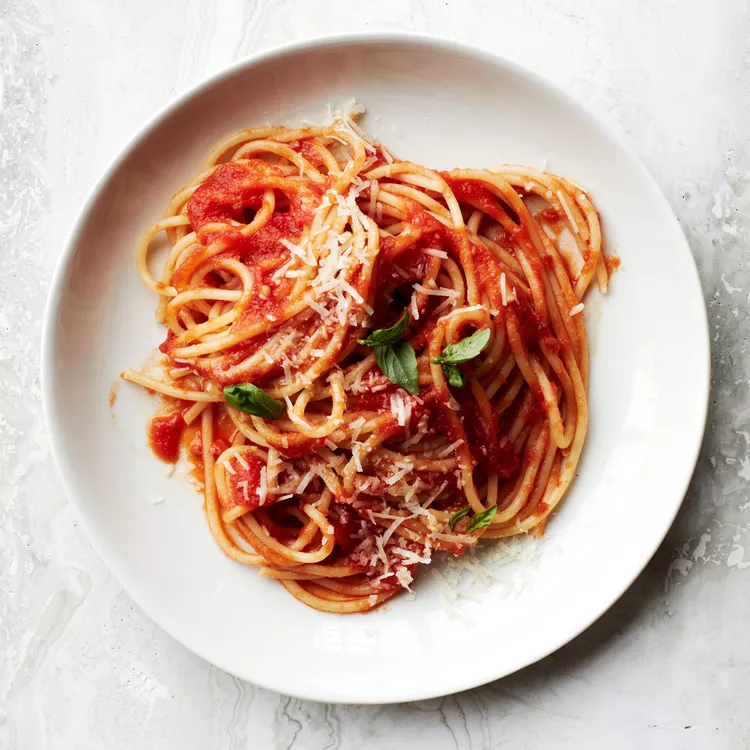

My Favorite Spaghetti Recipe

Ingredients
- 1/4 cup extra-virgin olive oil, plus more for drizzling
- 2 garlic cloves, thinly sliced
- Pinch of crushed red pepper
- One 28-ounce can peeled San Marzano tomatoes, pureed until smooth
- Salt
- 1/2 pound spaghetti
- 1 basil sprig, plus torn leaves, for garnish
- Freshly grated Parmigiano-Reggiano cheese, for serving
Preparation
- In a large, deep skillet, heat the 1/4 cup of olive oil. Add the sliced garlic and crushed red pepper and cook over moderate heat, stirring, until the garlic is golden, about 1 minute. Add the tomato puree, season with salt and simmer the tomato sauce until thickened, 15 minutes.
- Meanwhile, bring a large pot of salted water to a boil. Add the spaghetti and cook until pliable but still hard in the center, about 5 minutes. Drain the pasta, reserving 1 1/2 cups of the water.
- Add the spaghetti, cooking water and basil sprig to the tomato sauce and cook over moderately low heat, stirring gently, until the pasta is al dente and the sauce is thickened and clings to the strands, 8 minutes longer. Discard the basil sprig. Transfer the spaghetti to bowls. Drizzle with olive oil and garnish with basil leaves. Serve with grated cheese.